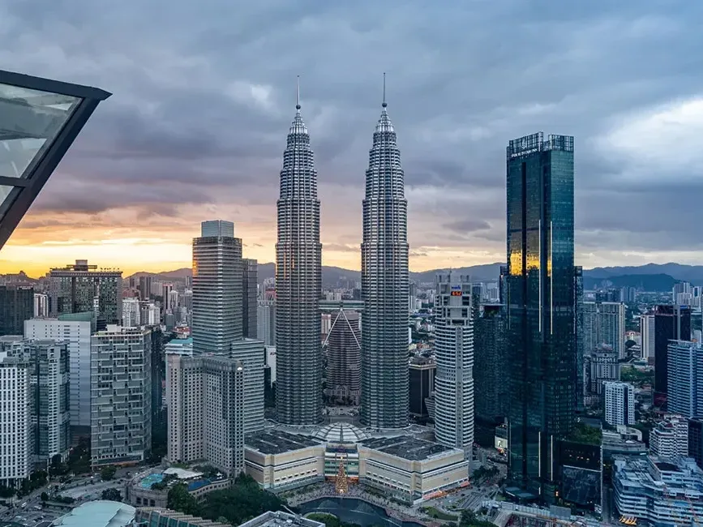
Destination Guide
Kuala Lumpur
A rainforest-fringed skyline, a night market a street away from every hotel, and Malaysia's best food packed into one walkable city.
Best time to go
Jun–Aug & Jan–Feb
Fly into
Kuala Lumpur (KUL)
Currency
Malaysian Ringgit (MYR)
Suggested stay
3–4 days
Plan This Trip
Search flights and hotels for Kuala Lumpur right here — no extra tabs.
Or search with Kiwi.com
Why go
Most first visits orbit the same three things — Petronas Towers by day, a mega-mall by evening, a night market for dinner — and that alone is a solid 48 hours. But Kuala Lumpur rewards slowing down: colonial-era Chinatown and Central Market sit a short walk from glass-and-steel towers, and the whole city is stitched together by an efficient, cheap metro. It's also Malaysia's default gateway, so most onward trips to Penang, Langkawi or Borneo start and end right here.
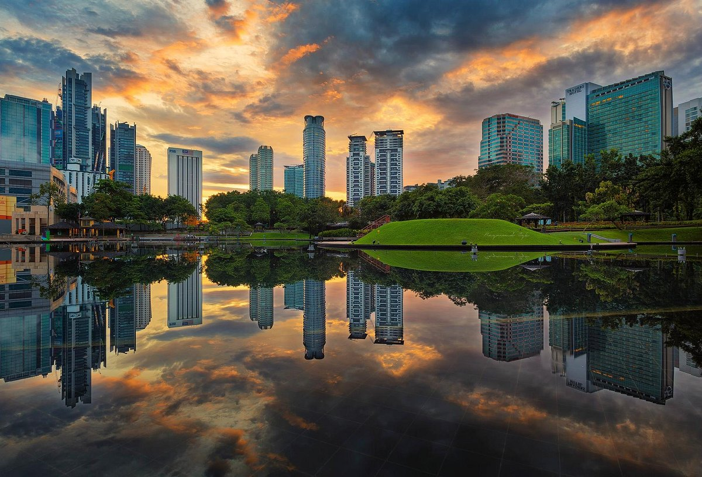
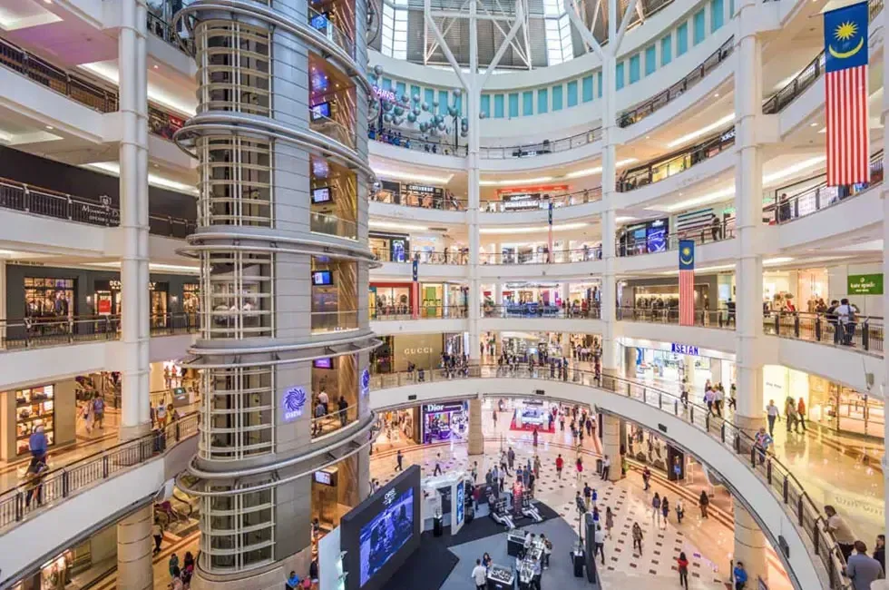
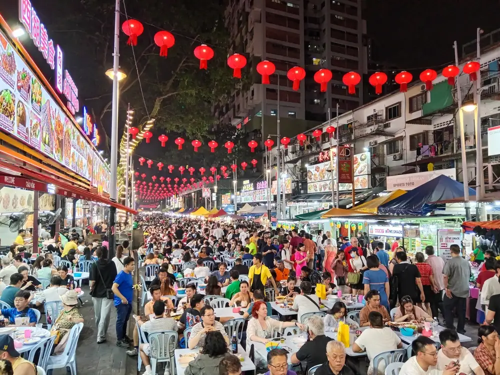
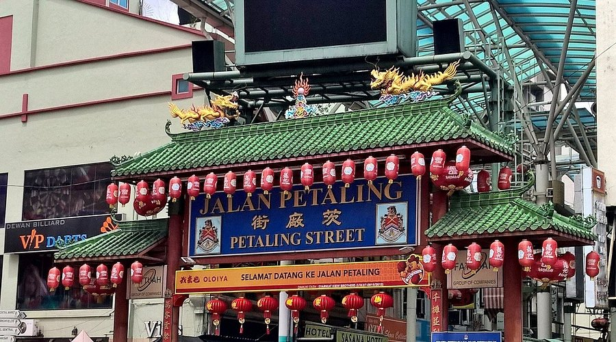
Where to Stay
KL's best hotels cluster around two districts — KLCC, in the shadow of the towers, and Bukit Bintang, the shopping and nightlife strip a short monorail hop away.
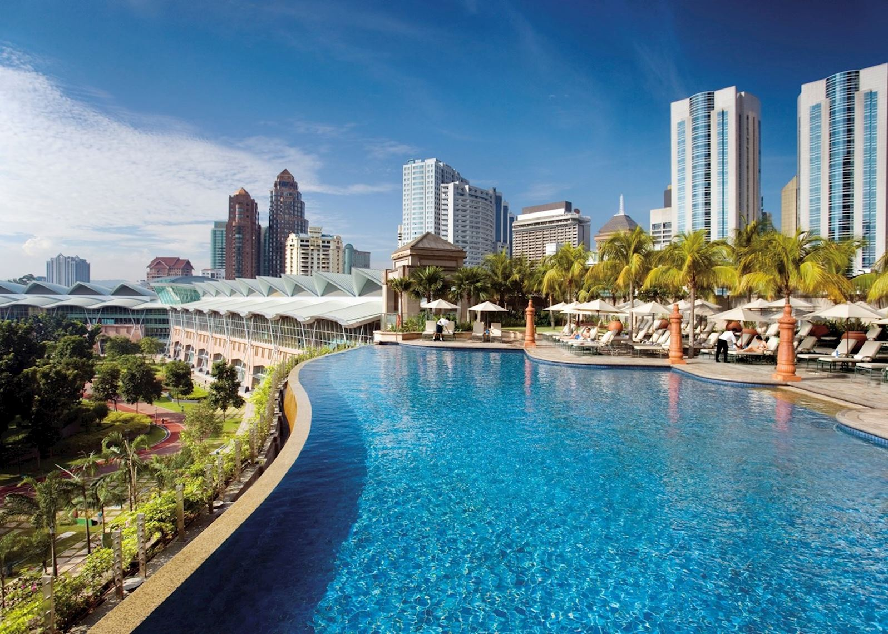
Mandarin Oriental
Right beside the Petronas Towers and KLCC Park, with a pool that looks straight up at them. As central as it gets.
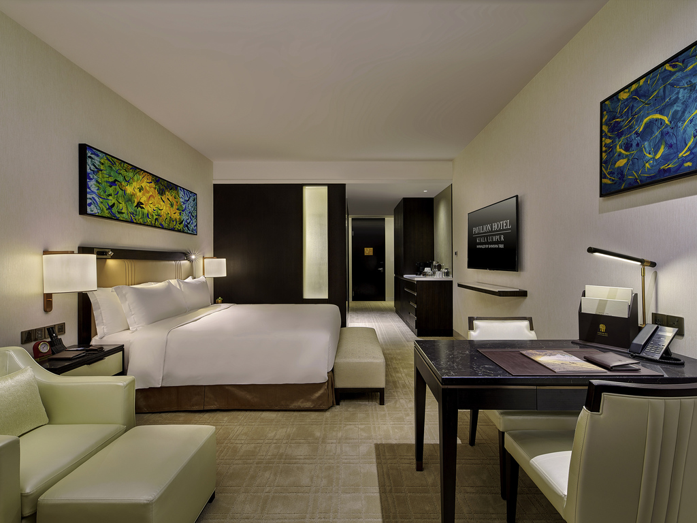
Pavilion Hotel
Sits above Pavilion Kuala Lumpur mall on the Bukit Bintang strip — step out of the lobby and you're already inside one of the city's best shopping centres.
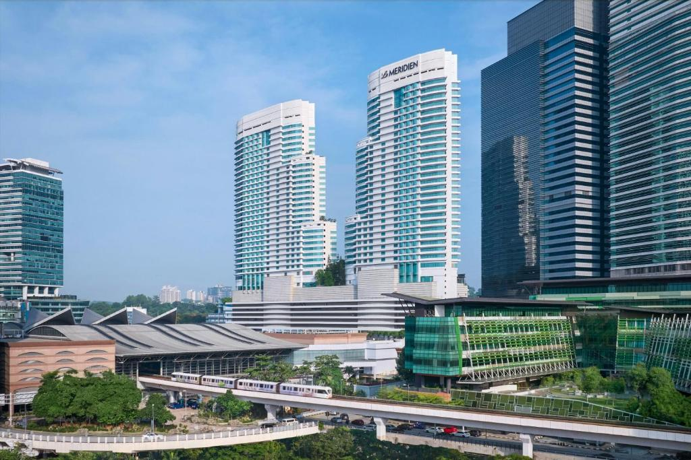
Le Méridien
Sits directly above KL Sentral, the city's main transit hub — handy if you're catching the KLIA Express to or from the airport.
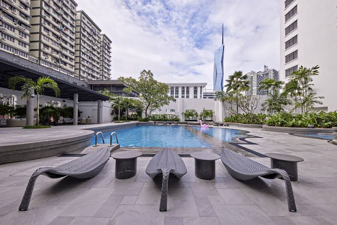
Hotel Royal Signature
A quieter, better-value base near the city centre with a rooftop pool — a solid pick if you'd rather save the budget for food and shopping.
KL, Before You Head Out
Book the Skybridge early
Petronas Towers tickets sell out days ahead, especially sunset slots — book online before you land, not the morning of.
Catch KLCC Park at golden hour
Free, shaded, and timed with the towers' evening light — a better first view than fighting the crowds at the base.
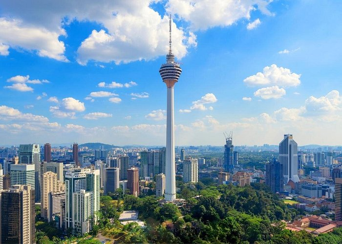
Climb KL Tower instead
Shorter queues than Petronas, a glass-floor sky deck, and it sits on a hill above the towers rather than between them.
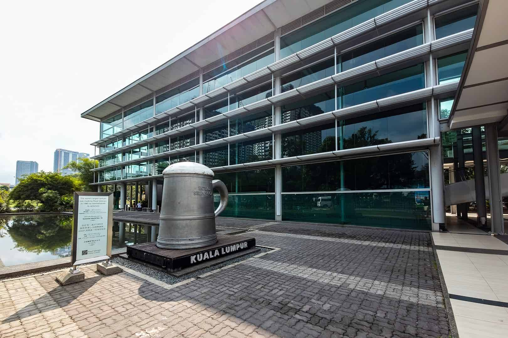
See the world's largest tankard
The Royal Selangor Visitor Centre runs free factory tours and hands-on pewter workshops — a good rainy-afternoon detour.
The Skyline: Where to Go
KL's landmarks and malls sit close enough together to do on foot, or one monorail stop apart.
Petronas Twin Towers & KLCC Park
The tallest twin towers on Earth, joined by a Skybridge on level 41 and topped by an observation deck near the pinnacle. At their feet, KLCC Park is 50 acres of green space with a wading pool, jogging track, and the city's best free view — especially at the evening fountain and light shows.
Suria KLCC
The mall built directly into the base of the towers — six floors, a mix of high street and luxury, and the easiest place to duck into air conditioning between sights.
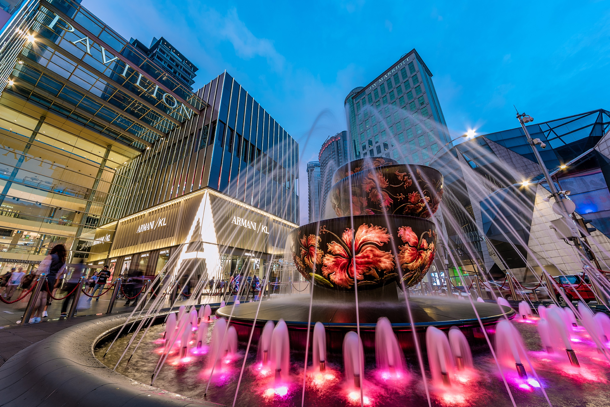
Pavilion Kuala Lumpur
The anchor of Bukit Bintang, KL's densest shopping and nightlife strip — flagship stores, a fountain plaza, and Jalan Alor's night market a five-minute walk away.
Bukit Bintang itself — the streets around Pavilion — is where most visitors end up after dark, whichever mall they started at.
Old KL: Markets & Food Streets
A short walk or one LRT stop from the towers, the older city is a different pace entirely — shophouses, hawker stalls, and markets that have been running since the 1800s.
Jalan Alor turns into an open-air food court every evening — grilled satay, char kway teow, and seafood cooked table-side, with plastic chairs spilling into the street until well past midnight. Go hungry and go late; it only gets busier after 9pm.
Petaling Street, Chinatown
A covered market street under a red-and-gold archway — bargain souvenirs and knock-offs by day, hawker stalls and cheap beer by night. Loud, dense, and worth an hour even if you don't buy anything.
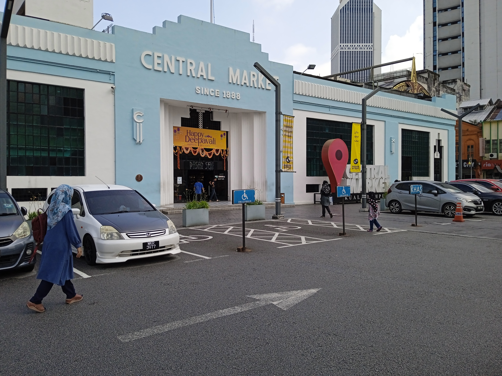
Central Market
An Art Deco former wet market, running since 1888, now given over to batik, handicrafts, and Little Kashmir's textile stalls under lantern-lit arcades. Calmer and more browsable than Petaling Street next door.
Getting There
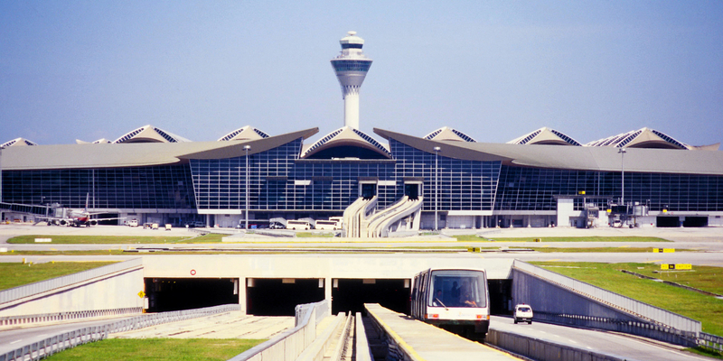

Malaysia Airlines
Malaysia's national carrier flies into Kuala Lumpur International Airport (KUL) from a wide network of Asian, Australian, Middle Eastern and European cities, with an in-terminal express rail link (KLIA Ekspres) running non-stop into KL Sentral in under 30 minutes.
A Simple 4-Day Route
Day 1
KLCC
Land, settle in, Petronas Towers at sunset and an evening walk through KLCC Park.
Day 2
Bukit Bintang
Pavilion and Suria KLCC by day, Jalan Alor's night market for dinner.
Day 3
Old KL
Petaling Street, Central Market, and the Royal Selangor Visitor Centre.
Day 4
KL Tower & departure
Sky deck at KL Tower, last-minute shopping, then the KLIA Ekspres to the airport.
Good to Know
Getting around
The LRT, MRT and monorail cover most tourist areas cheaply and beat the traffic. Grab (ride-hailing) fills in the gaps for anywhere the rail lines don't reach.
Entry requirements
Many nationalities get visa-free entry for short stays, but most visitors now need to submit a Malaysia Digital Arrival Card (MDAC) online before landing. Check the official portal rather than third-party lookalikes.
Packing
Light, breathable clothing year-round, a light rain jacket for sudden tropical downpours, and modest layers for mosque or temple visits. Malls run cold air conditioning, so bring something light-weight to layer.
Start Planning Your Kuala Lumpur Trip
Compare flights to Kuala Lumpur, and browse hotels in KLCC and Bukit Bintang, in one place.